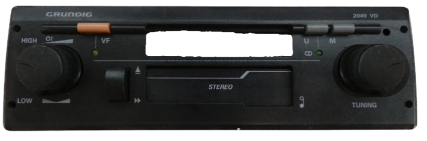

Download directly from Yarn
After installing the extension, open any Yarn clip and click Choose clips on that page. Its title is detected automatically. Set the clips before and after, collect the sequence, then save one ZIP.

Collect clips before and after a Yarn quote and save the numbered MP4s as one ZIP.
After installing the extension, open any Yarn clip and click Choose clips on that page. Its title is detected automatically. Set the clips before and after, collect the sequence, then save one ZIP.